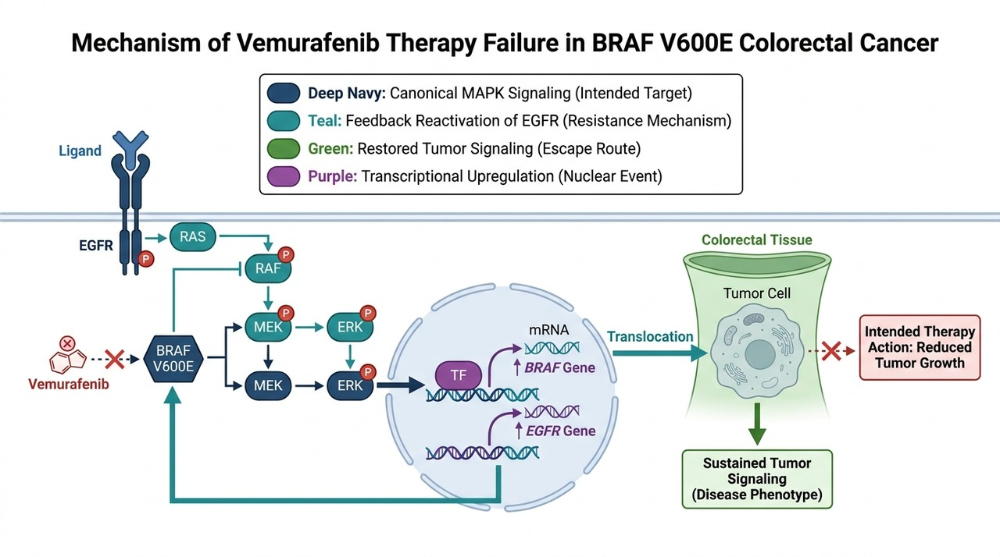

An atlas of 209 cited failed cancer therapies and their documented resistance mechanisms, across 27 solid and blood cancers. For patients who have relapsed or become resistant, BiRAGAS re-reads the biology to separate the causal driver from the noise.

Across the oncology landscape, the same failures repeat: the right drug in the wrong (unenriched) population, a target that was a correlate rather than a driver, a pathway that simply routed around the block. These are reasoning failures a causal model is built to surface - and they leave real patients without options.
A response that isn't a cure - the tumor evolves an escape route (a gatekeeper mutation, a bypass pathway, antigen loss).
A drug abandoned for the average patient may still be right for a molecularly-defined subgroup that the trial averaged away.
When guidelines are exhausted, a mechanism-anchored re-read can identify the enriched subgroup or the missing combination partner.
Pick a cancer type on the left. Each failed therapy is shown with its illustrated resistance mechanism, its citation and ClinicalTrials.gov link, and the BiRAGAS failure pattern. Every figure downloads as PNG or JPEG.
The BiRAGAS commentary below is retrospective and illustrative: it names the class of signal a causal-inference platform is built to surface. It is not a claim that BiRAGAS prospectively predicted any specific trial.
If a patient has relapsed, become resistant, or exhausted standard options, a BiRAGAS causal evaluation re-reads their tumor biology to identify what actually drives the disease - and what a mechanism-anchored next step could look like.
Physician-initiated, research/evaluation collaboration. We return a mechanism-anchored, cited analysis - not treatment advice.
Contact BiRAGAS →biragas@ayassbioscience.com
A professional booklet of every illustrated pathway, with a clickable index, citations, and BiRAGAS pattern for each - plus the underlying validated dataset.
207 illustrated failed-therapy pathways · clickable index · every figure cited and NCT/PMID-validated.
Download booklet (PDF)209 pathways · ClinicalTrials.gov + PubMed validated · 122/122 NCTs title-matched. Every illustration is an AI-assisted schematic with GeneCards-verified labels.